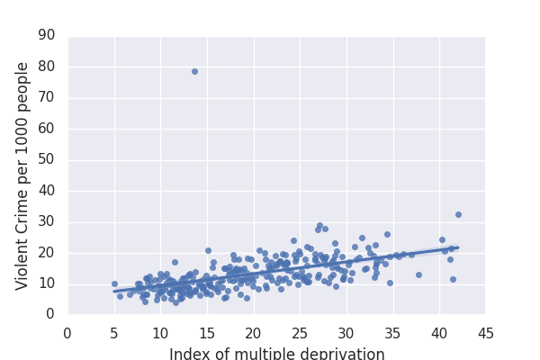

My first chart compares stadium capacity in different premiership venues.
My second chart compares CO2 greenhouse gas emmission per kg from different food types.
This chart hosts the raw CSV data on IMF lending
This improved version of the chart converts total IMF lending into USD($) then divides through by world GDP also in USD($)
IMF lending was highest as a percentage of GDP in 1985 - suggesting that this was the riskiest year. Not 2022 when lending is highest only in absolute terms.
This chart dispays monthly Food, Price and Natural Gas Indicies from 2012 to 2022 (2016=100, in terms of U.S. dollars)
Here I modified the chart so that commodity type has the visual encoding of 'color' insead of 'lineDash' allowing for much easier visual distinction between the commodity types.
Click HERE to view the notebook where I conducted my data analysis
I chose this website because it had a clear embedded table and no restrictive code preventing scrapers.
The map beneath displays the deprivation gap in England by Local Authority. Generally, there is a higher disparity in the North than the South however there are a couple outliers in the South.
In the "Whats next for Central Banks?" talk an arguement made by Jagjit Chadha was that gilt prices over recent years have continuously fell.
The two graphs above show average gilt yields for 10 and 30 year bonds respectively. Their lines of best fit clearly agree with the arguement set out by Jagjit.
The chart below regresses population on violent crime to see if there is a correlation between the two
The hypothesis I will examine is whether the level of deprivation in Community Safety Partnerships effects the amount of violent crime per 1000 people.
Click HERE to view the notebook where I conducted my data analysis
I find a positive correlation and the line of best fit suggests that for every 1 percentage point increase in deprivation, violent crimes per 1000 people increases by 0.38. Also that City of London was an extreme outlier.